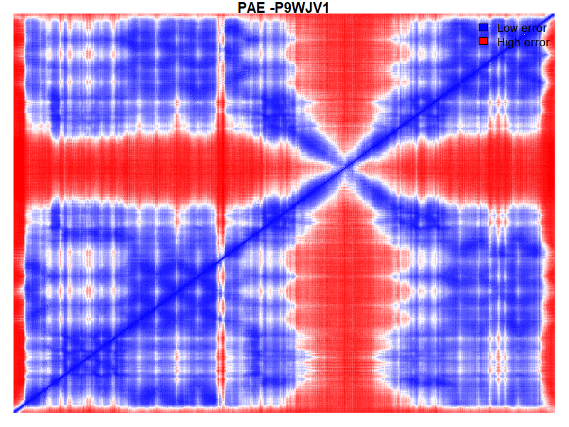

| PAE Mean | PAE Prop Under 5 |
PAE Max | pDLLT Mean | pDLLT Prop Over 90 |
pDLLT Prop Over 70 |
|---|---|---|---|---|---|
| 14.1 | 20.4% | 31 | 83.5 | 23.5% | 67% |
| Score type | Solvent Accessibility Agreement |
C-beta Interaction Potential |
All-Atom Interaction Potential |
Secondary Structure Agreement |
Torsion Angle Potential |
|---|---|---|---|---|---|
| Normalised | 0.6 | 0 | 0 | 0.7 | -0.2 |
| Z-Score | -0.7 | -0.1 | 2.2 | 0.5 | -1.4 |
| Average Local Quality Score |
Average Local Quality Score Error |
|---|---|
| 0.7 | 0.1 |
| Score type | QMEAN4 | QMEAN6 |
|---|---|---|
| Normalised | 0.7 | 0.7 |
| Z-Score | -0.5 | -0.8 |
| Chain | Wildtype | Residue | Mutation | QMEAN |
|---|---|---|---|---|
| A | I | 948 | V | 0.52 |
| A | T | 794 | I | 0.82 |
| A | D | 767 | N | 0.81 |
| Chain | Wildtype | Residue | Mutation | Average Pairwise Distance |
Buried/Exposed | MSA data | Conservation (1-variable,9-conserved) |
Wildtypeprevalence(%) | Mutation prevalence(%) |
|---|---|---|---|---|---|---|---|---|---|
| A | I | 948 | V | 0.5(0.1,0.7) | e | 140/150 | 2(3,3) | 2.9 | 29.3 |
| A | T | 794 | I | 0.5(0.1,0.7) | b | 150/150 | 6(7,5) | 0.7 | 60 |
| A | D | 767 | N | 0.5(0.1,0.7) | e | 150/150 | 9(9,9) | 99.3 | 0 |